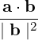
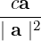
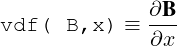
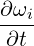
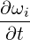
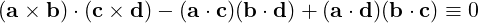
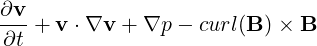
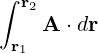
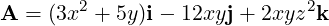

20.39 ORTHOVEC: Manipulation of Scalars and
Vectors
ORTHOVEC is a collection of REDUCE procedures and operations which provide a
simple-to-use environment for the manipulation of scalars and vectors. Operations
include addition, subtraction, dot and cross products, division, modulus, div, grad, curl,
laplacian, differentiation, integration, and Taylor expansion.
Author: James W. Eastwood.
Version 2 is summarized in [Eas91]. It differs from the original ([Eas87]) in revised
notation and extended capabilities.
20.39.1 Introduction
The revised version of ORTHOVEC([Eas91]) is, like the original ([Eas87]), a collection
of REDUCE procedures and operators designed to simplify the machine aided
manipulation of vectors and vector expansions frequently met in many areas of applied
mathematics. The revisions have been introduced for two reasons: firstly, to add extra
capabilities missing from the original and secondly, to tidy up input and output to make
the package easier to use.
The changes from Version 1 include:
1.
merging of scalar and vector unary and binary operators, +,−,∗,∕
2.
extensions of the definitions of division and exponentiation to vectors
3.
new vector dependency procedures
4.
application of l’Hôpital’s rule in limits and Taylor expansions
5.
a new component selector operator
6.
algebraic mode output of LISP vector components
The LISP vector primitives are again used to store vectors, although with the introduction
of LIST types in algebraic mode in REDUCE 3.4, the implementation may have been
more simply achieved using lists to store vector components.
The philosophy used in Version 2 follows that used in the original: namely, algebraic
mode is used wherever possible. The view is taken that some computational
inefficiencies are acceptable if it allows coding to be intelligible to (and thence
adaptable by) users other than LISP experts familiar with the internal workings of
REDUCE.
Procedures and operators in ORTHOVECfall into the five classes: initialisation,
input-output, algebraic operations, differential operations and integral operations.
Definitions are given in the following sections, and a summary of the procedure
names and their meanings are give in Table 1. The final section discusses test
examples.
20.39.2 Initialisation
The procedure vstart initialises ORTHOVEC. It may be called after ORTHOVEChas
been loaded to reset coordinates. vstart provides a menu of standard coordinate
systems:
1.
cartesian (x,y,z) = (x, y, z)
2.
cylindrical (r,𝜃,z) = (r, th, z)
3.
spherical (r,𝜃,ϕ) = (r, th, ph)
4.
general (u1,u2,u3) = (u1, u2, u3)
5.
others
which the user selects by number. Selecting options (1)-(4) automatically sets up the
coordinates and scale factors. Selection option (5) shows the user how to select another
coordinate system. If vstart is not called, then the default cartesian coordinates are
used. ORTHOVECmay be re-initialised to a new coordinate system at any time during a
given REDUCE session by typing
vstart $
20.39.3 Input-Output
ORTHOVECassumes all quantities are either scalars or 3 component vectors. To define
a vector a with components (c1,c2,c3) use the procedure svec as follows
a := svec(c1, c2, c3);
The standard REDUCE output for vectors when using the terminator “;” is to list the
three components inside square brackets [], with each component in prefix form. A
replacement for the standard REDUCE procedure maprin is included in the package to
change the output of LISP vector components to algebraic notation. The procedure
vout (which returns the value of its argument) can be used to give labelled output of
components in algebraic form: e.g.,
b := svec (sin(x)**2, y**2, z)$
vout(b)$
The operator _ can be used to select a particular component (1, 2 or 3) for output
e.g.
b _1 ;
Note the space before the _ operator: otherwise this would be read as identifier
b_1.
20.39.4 Algebraic Operations
Six infix operators, sum, difference, quotient, times, exponentiation and cross product,
and four prefix operators, plus, minus, reciprocal and modulus are defined in
ORTHOVEC. These operators can take suitable combinations of scalar and vector
arguments, and in the case of scalar arguments reduce to the usual definitions of
+,−,∗,∕, etc.
The operators are represented by symbols
+, -, /, *, ^, ><
The composite >< is an attempt to represent the cross product symbol × in ASCII
characters. If we let v be a vector and s be a scalar, then valid combinations of arguments
of the procedures and operators and the type of the result are as summarised below. The
notation used is result :=procedure(left argument, right argument) or result :=(left operand) operator (right operand) .
Vector Addition
v
:=
vectorplus(v)
or
v
:=
+ v
s
:=
vectorplus(s)
or
s
:=
+ s
v
:=
vectoradd(v,v)
or
v
:=
v + v
s
:=
vectoradd(s,s)
or
s
:=
s + s
Vector Subtraction
v
:=
vectorminus(v)
or
v
:=
- v
s
:=
vectorminus(s)
or
s
:=
- s
v
:=
vectordifference(v,v)
or
v
:=
v - v
s
:=
vectordifference(s,s)
or
s
:=
s - s
Vector Division
v
:=
vectorrecip(v)
or
v
:=
/ v
s
:=
vectorrecip(s)
or
s
:=
/ s
v
:=
vectorquotient(v,v)
or
v
:=
v / v
v
:=
vectorquotient(v, s )
or
v
:=
v / s
v
:=
vectorquotient( s ,v)
or
v
:=
s / v
s
:=
vectorquotient(s,s)
or
s
:=
s / s
Vector Multiplication
v
:=
vectortimes( s ,v)
or
v
:=
s * v
v
:=
vectortimes(v, s )
or
v
:=
v * s
s
:=
vectortimes(v,v)
or
s
:=
v * v
s
:=
vectortimes( s , s )
or
s
:=
s * s
Vector Cross Product
v
:=
vectorcross(v,v)
or
v
:=
v × v
Vector Exponentiation
s
:=
vectorexpt (v, s )
or
s
:=
v ^ s
s
:=
vectorexpt ( s , s )
or
s
:=
s ^ s
Vector Modulus
s
:=
vmod (s)
s
:=
vmod (v)
All other combinations of operands for these operators lead to error messages being
issued. The first two instances of vector multiplication are scalar multiplication of
vectors, the third is the product of two scalars and the last is the inner (dot) product. The
unary operators +, -, / can take either scalar or vector arguments and return results
of the same type as their arguments. vmod returns a scalar.
In compound expressions, parentheses may be used to specify the order of combination.
If parentheses are omitted the ordering of the operators, in increasing order of precedence
is
+ | - | dotgrad | * | >< | ^ | _
and these are placed in the precedence list defined in REDUCE after <. The differential
operator dotgrad is defined in the following section, and the component selector _
was introduced in section 3.
Vector divisions are defined as follows: If a and b are vectors and c is a scalar,
then
a∕b
=

c∕a
=

Both scalar multiplication and dot products are given by the same symbol, braces are
advisable to ensure the correct precedences in expressions such as (a ⋅b)(c ⋅d).
Vector exponentiation is defined as the power of the modulus: an≡vmod(a)n=∣a∣n
20.39.5 Differential Operations
Differential operators provided are div, grad, curl, delsq, and dotgrad. All but the last
of these are prefix operators having a single vector or scalar argument as appropriate.
Valid combinations of operator and argument, and the type of the result are shown in
table 20.11.
s
:=
div (v)
v
:=
grad(s)
v
:=
curl(v)
v
:=
delsq(v)
s
:=
delsq(s)
v
:=
v dotgrad v
s
:=
v dotgrad s
Table 20.11:ORTHOVECvalid combinations of operator and argument
All other combinations of operator and argument type cause error messages to be issued.
The differential operators have their usual meanings [Spi59]. The coordinate system
used by these operators is set by invoking vstart (cf. Sec. 20.39.2). The names h1,
h2 and h3 are reserved for the scale factors, and u1, u2 and u3 are used for the
coordinates.
A vector extension, vdf, of the REDUCE procedure DF allows the differentiation of a
vector (scalar) with respect to a scalar to be performed. Allowed forms are vdf(v, s) →v and vdf(s, s) → s , where, for example

The standard REDUCE declarations depend and nodepend have been redefined to
allow dependences of vectors to be compactly defined. For example
a := svec(a1,a2,a3)$;
depend a,x,y;
causes all three components a1,a2 and a3 of a to be treated as functions of x and y.
Individual component dependences can still be defined if desired.
depend a3,z;
The procedure vtaylor gives truncated Taylor series expansions of scalar or vector
functions:
vtaylor(vex,vx,vpt,vorder);
returns the series expansion of the expression VEX with respect to variable VX about
point VPT to order VORDER. Valid combinations of argument types are shown in
table 20.12.
VEX
VX
VPT
VORDER
v
v
v
v
v
v
v
s
v
s
s
s
s
v
v
v
s
v
v
s
s
s
s
s
Table 20.12:ORTHOVECvalid combination of argument types.
Any other combinations cause error messages to be issued. Elements of VORDER must
be non-negative integers, otherwise error messages are issued. If scalar VORDER is
given for a vector expansion, expansions in each component are truncated at the same
order, VORDER.
The new version of Taylor expansion applies l’Hôpital’s rule in evaluating
coefficients, so handle cases such as sin(x)∕(x) , etc. which the original version of
ORTHOVECcould not. The procedure used for this is ov_limit, which can
be used directly to find the limit of a scalar function ex of variable x at point
pt:-
ans := ov_limit(ex,x,pt);
20.39.6 Integral Operations
Definite and indefinite vector, volume and scalar line integration procedures are included
in ORTHOVEC. They are defined as follows:
vint(v,x)
=∫v(x)dx
dvint(v,x,a,b)
=∫abv(x)dx
volint(v)
=∫vh1h2h3du1du2du3
dvolint(v,l,u,n)
=∫luvh1h2h3du1du2du3
lineint(v,ω,t)
=∫v ⋅dr≡∫vihi

dt
dlineint(v,ωt,a,b)
=∫abvihi

dt
In the vector and volume integrals, v are vector or scalar, a,b,x and n are scalar.
Vectors l and u contain expressions for lower and upper bounds to the integrals.
The integer index n defines the order in which the integrals over u1,u2 and
u3 are performed in order to allow for functional dependencies in the integral
bounds:
n
order
1
u1 u2 u3
2
u3 u1 u2
3
u2 u3 u1
4
u1 u3 u2
5
u2 u1 u3
otherwise
u3 u2 u1
The vector ω in the line integral’s arguments contain explicit paramterisation of the
coordinates u1,u2,u3 of the line u(t) along which the integral is taken.
Procedures
Description
vstart
select coordinate system
svec
set up a vector
vout
output a vector
vectorcomponent
_
extract a vector component (1-3)
vectoradd
+
add two vectors or scalars
vectorplus
+
unary vector or scalar plus
vectorminus
-
unary vector or scalar minus
vectordifference
-
subtract two vectors or scalars
vectorquotient
/
vector divided by scalar
vectorrecip
/
unary vector or scalar division
(reciprocal)
vectortimes
*
multiply vector or scalar by
vector/scalar
vectorcross
><
cross product of two vectors
vectorexpt
^
exponentiate vector modulus or scalar
vmod
length of vector or scalar
Table 20.13:Procedures names and operators used in ORTHOVEC(part 1)
Procedures
Description
div
divergence of vector
grad
gradient of scalar
curl
curl of vector
delsq
laplacian of scalar or vector
dotgrad
(vector).grad(scalar or vector)
vtaylor
vector or scalar Taylor series of vector or scalar
vptaylor
vector or scalar Taylor series of scalar
taylor
scalar Taylor series of scalar
limit
limit of quotient using l’Hôpital’s rule
vint
vector integral
dvint
definite vector integral
volint
volume integral
dvolint
definite volume integral
lineint
line integral
dlineint
definite line integral
maprin
vector extension of REDUCE maprin
depend
vector extension of REDUCE depend
nodepend
vector extension of REDUCE nodepend
Table 20.14:Procedures names and operators used in ORTHOVEC(part 2)
20.39.7 Test Cases
To use the REDUCE source version of ORTHOVEC, initiate a REDUCE session and then
load the package with the command load_package orthovec; (see section 23.2
of the REDUCE manual). If coordinate dependent differential and integral operators
other than cartesian are needed, then vstart must be used to reset coordinates and
scale factors.
Six simple examples are given in the Test Run Output file orthovec.rlg to illustrate the
working of ORTHOVEC. The input lines were taken from the file orthovec.tst (the Test
Run Input), but could equally well be typed in at the Terminal.
Example 1
Show that

Example 2
Write the equation of motion

in cylindrical coordinates.
Example 3
Taylor expand
sin(x)cos(y) + ez about the point (0,0,0) to third order in x, fourth order
in y and fifth order in z.
sin(x)∕x about x to fifth order.
v about x = (x,y,z) to fifth order, where v = (x∕sin(x),(ey− 1)∕y,(1 +z)10).
Example 4
Obtain the second component of the equation of motion in example 2, and the first
component of the final vector Taylor series in example 3.
Example 5
Evaluate the line integral

from point r1= (1,1,1) to point r2= (2,4,8) along the path (x,y,z) = (s,s2,s3)
where

and (i,j,k) are unit vectors in the (x,y,z) directions.
Example 6
Find the volume V common to the intersecting cylinders x2+ y2= r2 and x2+ z2= r2
i.e. evaluate
 ], with each component in prefix form. A
replacement for the standard REDUCE procedure maprin is included in the package to
change the output of LISP vector components to algebraic notation. The procedure
vout (which returns the value of its argument) can be used to give labelled output of
components in algebraic form: e.g.,
], with each component in prefix form. A
replacement for the standard REDUCE procedure maprin is included in the package to
change the output of LISP vector components to algebraic notation. The procedure
vout (which returns the value of its argument) can be used to give labelled output of
components in algebraic form: e.g.,